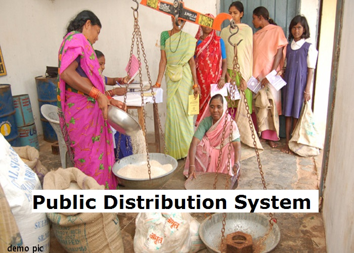
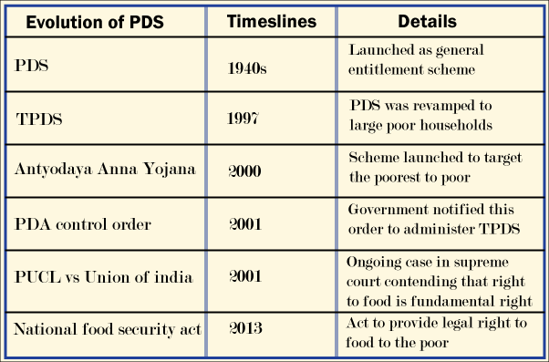
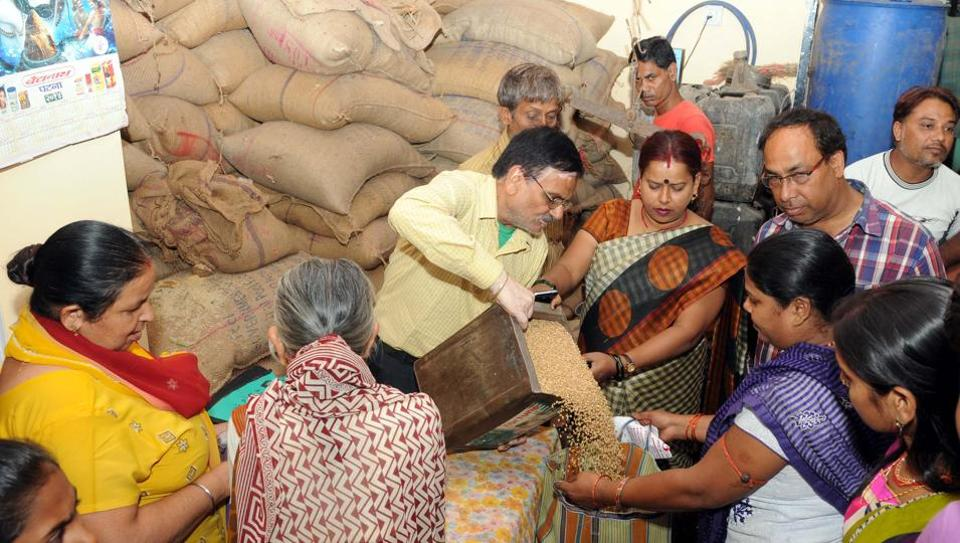

The public distribution of essential commodities was in existence in the country during the inter-war period. However, PDS, with its focus on distribution of foodgrains in urban scarcity areas, had emanated from the critical food shortages of 1960s. PDS had substantially contributed to the containment of rise in food grains prices and ensured access of food to urban consumers. As the national agricultural production had grown in the aftermath of Green Revolution, the outreach of PDS was extended to tribal blocks and areas of high incidence of poverty in the 1970s and 1980s.Economist Abhijit Sen, a former Planning Commission member and one of the country's foremost experts on rural economy, died on Monday night. He was 72.In June 1997, the Government of India launched the Targeted Public Distribution System (TPDS) with a focus on the poor.

There are two types of pds they are
1.Revamped Public Distribution System (RPDS)
2.Targeted Public Distribution System (TPDS)
The Revamped Public Distribution System (RPDS) was launched in June, 1992 with a view to strengthen and streamline the PDS as well as to improve its reach in the far-flung, hilly, remote and inaccessible areas where a substantial section of the poor live. It covered 1775 blocks wherein area specific programmes such as the Drought Prone Area Programme(DPAP), Integrated Tribal Development Projects (ITDP), Desert Development Programme (DDP) were being implemented and in certain Designated Hill Areas (DHA) which were identified in consultation with State Governments for special focus. Food grains for distribution in RPDS areas were issued to the States at 50 paise below the Central Issue Price. The scale of issue was up to 20 kg per card. The RPDS included area approach for ensuring effective reach of the PDS commodities, their delivery by State Governments at the doorstep of FPSs in the identified areas, additional ration cards to the left out families, infrastructure requirements like additional Fair Price Shops, storage capacity etc. and additional commodities such as tea, salt, pulses, soap, etc. for distribution through PDS outlets.

In June, 1997, the Government of India launched the Targeted Public Distribution System (TPDS) with focus on the poor. Under the PDS, States were required to formulate and implement foolproof arrangements for identification of the poor for delivery of foodgrains and for its distribution in a transparent and accountable manner at the FPS level. The scheme, when introduced, was intended to benefit about 6 crore poor families for whom a quantity of about 72 lakh tonnes of food grains was earmarked annually. The identification of the poor under the scheme was done by the States as per State-wise poverty estimates of the Planning Commission for 1993-94 based on the methodology of the "Expert Group on estimation of proportion and number of poor” chaired by Late Prof Lakdawala. The allocation of food grains to the States/UTs was made on the basis of average consumption in the past i.e. average annual off-take of food grains under the PDS during the past ten years at the time of introduction of TPDS.
